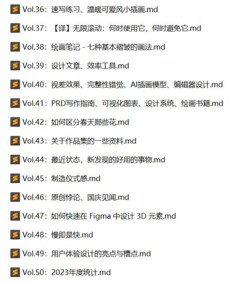
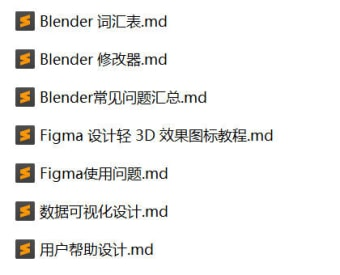

2023 个人年度统计
连续写了三年的各大领域年度统计，才发现没有对自己的生活工作进行一次年度回顾，于是今年决定写一下个人年度统计。
画过的画
年初定的今年要多画画的目标完成得一般，甚至有些敷衍。
- 杂志人物系列：年初学衣褶时画的一套人物插画
- 二十四节气简笔画系列：画得有点疲劳了，技法没有提升，速度提升了
- 温暖可爱风插画
- 简单速写
- 得丘复古插画
- 万圣夜插画
- 圣诞插画


大多数画都发在了这两个地方
- https://tangweijuan.com/
- https://www.xiaohongshu.com/user/profile/59c5394744363b307d64bd78?xhsshare=CopyLink&appuid=59c5394744363b307d64bd78&apptime=1694325923
写过的文章
周刊：
说是周刊，结果一年才写 15 期，算下来都可以当月刊了，但我对这个不怎么焦虑，还是希望有想分享的东西才写，只是用「周刊」这名字不太合适了。

博客：
发布出来的仅 2 篇，草稿箱里倒挺多，因为想写的太多，但快速写出来的总是有一些未完成的感觉，导致没有发布，久了就不想发了，或许明年能发吧。

设计过的项目
- 个人网站改版：在第 44 期周刊的时候也提到过，因为购买的腾讯云要到期了，也不想续费了，所以决定把网站迁移到免费的 github 上，趁此机会把网站重新设计了一下，因为今年沉迷于各种真皮活页本，就以此为灵感设计了网站的首页。
- BIM 云平台：工作项目
- CAD 云平台：工作项目
- CAM 桌面端软件：工作项目
- 电网可视化大屏：工作项目
- 其他：海报、宣传页、名片、展架、公众号配图
用过的电脑软件
- 每日必用：Figma（生产力工具)、Snipaste (截图贴图神器)、Eagle (灵感收集)、Excel (工作日程管理)
- 经常用到：Sublime、XMind
- 偶尔参考：SketchUp、Blender、BricsCAD、Archicad、Rhino、CrownCAD、OnShape、Sharp3D、Spline、Bezel、模袋云、酷大师
用过的手机 APP
- 写、记录：日历清单、极简日记、语雀、手机自带笔记
- 读：Qi Reader、微信读书
- 听：小宇宙
看过的书
今年看的书很多都是之前看过的，因为是当工具书来看，也就会常常翻一下，但记得也不是很清楚了。
设计类：
- 《启示录：打造用户喜爱的产品》
- 《亲爱的界面》
- 《这才是用户体验设计》
- 《设计的陷阱》
绘画类：
- 《做绘本的人》
- 《奥利弗风景速写教程》。学风景速写非常实用的书，作者从黑白到彩色，速写的流程和要点都有很细致的讲解。
- 《带上画本去旅行》。内容看起来很轻松，作者用 6 个城市，20 个地点，讲解了食物、植物、建筑等题材的钢笔淡彩画法，技巧清晰，能鼓励用画笔去记录生活。
- 《慢慢来比较快：成为插画师的30周学习手册》
- 《但是还有好心情》。简单治愈的一本黑白画册，画的内容就是现在生活的真实写照，半小时看完。
- 《花生米样的云》
- Glenn Vilppu 的人体教程系列书
其他：
- 《谁杀了她》
- 《今天也要好好写手账啊》。关注了作者的视频和播客频道，看这本书就像听着作者的声音，和我聊关于手账的生活。
- 《内容平台：产品运营方案与实践》。互联网方面的书，我发现自己看了很多关于产品和设计的书，而对于运营方面倒是一本没看过，所以找了这本书来看，但也没记住什么。
- 《汉英对比与英语学习》。通过师生问答的形式来阐述汉语对英语学习的重要性。
听过的播客
因为通勤时间长，地铁上信号也不好，没法看手机，就只能用听的方式来度过漫长的通勤。
听过最多的就是「肥话连篇」，基本每期必听，因为内容比较轻松，很适合在通勤路上听。
之前还经常听 Lemon 电台，但今年停更了。
看过的电影
现在看电影越来越少了，因为很难静下心来看完一部，以前的「想看」列表中的电影也懒得找来看，希望明年能恢复看电影的热情。
- 天空之城。作为 20 年后重映的宫崎骏作品，必须要去支持一下。
- 长安三万里。从高适的角度去切入，感觉很特别。
- 孤注一掷。题材不错，对于反诈应该是起到了宣传作用的，前半部分情节也还行，后面拉垮。以为王传君是主演呢，结果戏份并不多
- 龙马精神
- 保你平安
- 人生路不熟
- 我爱你
- 八角笼中
- 学爸
- 交换人生
- 消失的她
- 爱很美味
看过的电视剧
看过的很多电视剧都不记得了，基本都是国产剧，看起来轻松，也不怕哪里没看就接不上。
从各大平台上 2023 年电视剧列表找了找，大概看了这些，也没想到竟然看过这么多。
- 漫长的季节。好看
- 狂飙。好看
- 莲花楼。好看
- 翻山涉水上学路。好看，看的第二遍。
- 长相思。一般
- 故乡，别来无恙。一般
- 欢颜。难看
- 鹊刀门传奇。一般
- 骄阳伴我。一般
- 九义人。一般
- 曾少年。很一般
- 心想事成。一般
- 显微镜下的大明之丝绢案。挺好
- 熟年。很一般
- 灿烂的转身。难看
- 人生之路。挺好
- 长风渡。一般
- 保护我方城主大人。挺好，下饭剧，轻松
玩过的游戏
COCOON。这是看了今年 TGA 年度游戏被种草的，看着画风挺想玩一下的，查了一下这个游戏的设计师竟然也是我之前玩过的地狱边境的设计师，所以我觉得应该会不错。
双人成行。前年的游戏，今年再玩一次，发现自己的操作熟练多了。
去过的城市
- 武汉
- 重庆
- 上海
- 宣城
- 苏州
订阅： 本站所有内容首发于 tangweijuan.com，同步更新于微信公众号"Afterwork Time"，欢迎扫描下方二维码订阅。

发布于:
2023/12/31